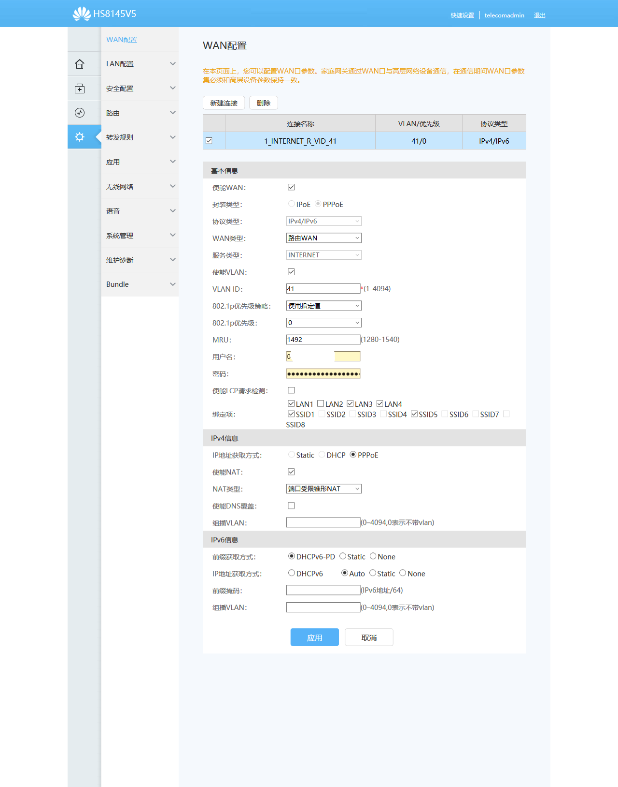
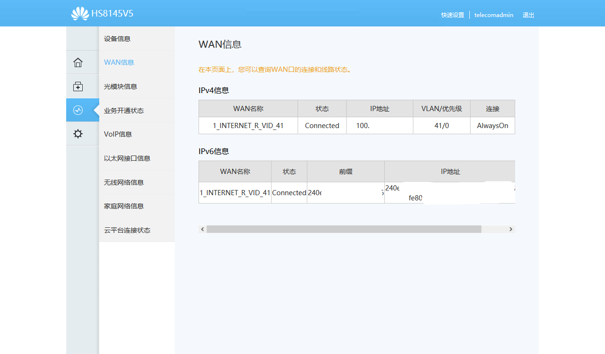

缘起
家里的老光猫大约是15年的时候升级光纤时配置的，型号是华为HGU421N V3。18年升级200M光纤，感觉网络没有质的提升。最近看到电信的促销方案，又去营业厅将200M升级为300M。问了光猫的事情，工作人员说如果是非千兆光猫，可以申请更换。HGU421N V3的性能，网上没有准确的说法，一般都认为它是300M光猫。
确认老光猫的性能之后，联系了电信10000。技术人员跟我说，如果通过电信更换光猫，需要交99元，而且换到手的千兆光猫是二手的良品，并且产权仍归电信所有。我问能否自行更换光猫，对方表示可以，并且给了loid和密码（实际上，我很早之前就拿到自己账户的loid和密码，网上说loid是一串12-20位的字符，但我的loid只有11位，搞的我一直不是很确定）。
事前准备
首先，自行更换光猫必须要有loid和密码。淘宝上有大量的二手和全新光猫出售，卖家都在页面上说明必须要有loid（也叫做逻辑id）和密码。网上的说法是只要你向客服要，电信都会给你。
其次，必须有上网账户（我的账户是区号+固定电话号）和上网密码。如果忘记账户和密码信息，可以在电信网上营业厅重置。
最后，根据家里光纤接口的类型（epon还是gpon），买一台千兆光猫。我选了二手的华为 HS8145V5，这可能是现在淘宝上最常见的千兆光猫，入手价格是170元。购买时要和卖家多沟通，确认对方设备能否用于自家光纤，以免入手后没办法使用，费时费力。
光猫设置
入网设置
卖家一般会提供教程，告诉你应该如何进入后台和设置各项参数（过程中要用到loid和密码，上网账户和上网密码）。设置非常简单，没有意外的话，大约5分钟就能搞定。
我自己设置完后，连不上网。联系卖家，卖家人不错，还通过微信视频指导。问题出在一项参数的设置上，之前卖家让我不用设置，实际上是要设置的。设置完成之后，便能正常连入网络。
IPV6设置
WAN设置
IPV6正成为主流，不少网站和APP都开始支持IPV6。卖家只提供了光猫IPV4的设置教程，不过他告诉我，可以在光猫的WAN设置中，将协议类型改为IPV4/IPV6。我自己将IPV4的部分仍按原来卖家教程进行设置，IPV6依光猫默认参数，不做改动。没想到，一次就成功了。

WAN信息
如果系统信息-WAN信息的显示和下图类似，状态是Connected，并且有IP地址，说明WAN设置成功。可以访问百度IPV6做下测试，如果页面没有异常提示，说明IPV6设置成功。

设置emule（电骡）
这次更换光猫最大的惊喜是新光猫能直接识别华为荣耀电力猫所连接的设备。 由于家里网络布线的问题，我一直都用华为荣耀电力猫。电脑通过wifi连接电力猫，再通过电力猫连接光猫。因为网络是转接的，我之前要对老光猫进行设置，就必须将电脑拿到客厅去连接老光猫的wifi，才能进入老光猫后台。这次换新光猫之后，发现新光猫能识别电力猫所连接的所有设备，并直接给这些设备分配局域网地址。即便连接的是电力猫的无线网络，也能直接进光猫的后台。
网络能直连，意味着可以做端口映射。我以前是emule（电骡）深度用户，老光猫被电信限制，普通管理员账户根本没办法设置端口映射，导致emule一直是low id，基本没法用。新光猫的卖家直接给了超级管理员账户，可以自由设置DMZ主机、端口映射和UPNP功能。
内网和公网IP问题
按照先前的经验，逐一设置DMZ主机、端口映射和UPnP，但TCP端口直连仍然失败，ed2k服务器连接的结果lowid。感谢伟大的互联网，有网友说是因为IPV4的公网地址不足，电信现在给用户分配的都是内网IP。如果是内网IP，你再怎么设置DMZ主机或者端口映射，emule也仍然是low id。
验证内网ip
先看系统信息-WAN信息，如果信息中的IPV4地址是100开头的，那么基本就是内网IP。
再查自己的外网IP。百度搜索直接输入IP，搜索结果会给出你的本机IP地址，如果本机IP地址和系统信息-WAN信息中的IP不一致，说明你现在就是内网IP。
更换公网IP
直接联系电信10000，选择人工服务，告诉客服要将IP地址更换为公网IP。我因为是深夜打电话，客服没有权限，但他说技术人员会在第二天联系我。第二天，工作人员联系我，确认信息后，说24小时之内会将IP变更为公网IP，需要自行重启光猫。实际上不需要等这么长时间，我过了半小时后就重启光猫，IP地址就已经变了，不再是100开头，并且和百度搜索“IP”出来的本机IP地址相同。
emule high id 设置
在光猫上设置端口映射的方法很多。我一开始没设置成功，因为我把所有端口映射的办法都一起用上了。实际上只要开启光猫中的高级配置-应用-UPnP功能就够了（emule版本：emule
v0.50a Xtreme
8.0）。对应地，需要在emule软件选项-连接勾选启用UPnP端口映射。
小结
新光猫不管是有线速度还是wifi速度都比老光猫有明显提升。用有线连接老光猫测速，网速大概在80Mbps。换成新光猫后，网速能达到200Mbps。老光猫wifi速度在45Mbps左右，新光猫上升到90Mbps左右。